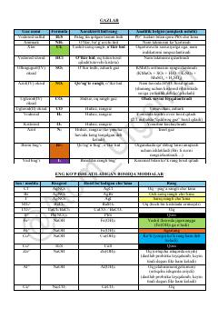

A2Kimyoviy moddalar va ionlarni aniqlash bo'yicha qisqacha analitik qo'llanma.
Ushbu qo'llanma kimyoviy moddalar, gazlar va ionlarning xossalarini aniqlash bo'yicha qisqacha ma'lumotlarni o'z ichiga oladi. Unda turli reagentlar yordamida cho'kma hosil qilish, metall oksidlari va ionlarning alangaga ta'siri kabi analitik kimyo uchun muhim bo'lgan jadval va tushuntirishlar keltirilgan.